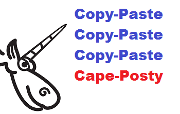
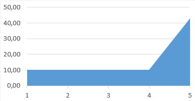

私はAndrey Karpovです。コピー＆ペーストが原因のエラーを何百件も調査してきました。確かに言えるのは、プログラマーは大きなコードの最後の部分でよくミスをするということです。この現象について論じたプログラミングの本はまだないようなので、自分で何か書くことにしました。私はこれを「最終行効果」と呼んでいます。

末行效应
プログラミング中、プログラマーはよく一連の類似した構造を書く必要があります。一行ずつキーボードで入力するのは退屈で非効率的です。だからこそ「コピー＆ペースト」技を使うのです。コードを数回コピーして貼り付け、それから修正します。このやり方の欠点は誰もが知っています。貼り付け後に修正を忘れやすく、最終的に問題を引き起こします。残念ながら、これより良い方法はなかなか見つかりません。
では、私がどんな法則を発見したのか？エラーはたいてい最後に貼り付けたコードブロックで発生することに気づきました。
以下は簡単な例です：
inline Vector3int32& operator+=(const Vector3int32& other) {
x += other.x;
y += other.y;
z += other.y;
return *this;
}
この行に注目してください: “z += other.y;”。プログラマーは 'y' を 'z' に置き換えるのを忘れています。
これは仮定の例だと思うかもしれませんが、実際には実在のアプリケーションから来ています。これから、これが頻繁に見られる一般的なエラーであることをお見せしましょう。プログラマーはよく一連の類似操作の終わりにこの種のミスを犯します。
ロッククライマーは最後の数十メートルで滑落することがよくあると聞きました。彼らが疲れているからではなく、まさにゴールが近づいて興奮し、成功の喜びを想像して注意力が散漫になり、最後に足を滑らせるのです。プログラマーも同じではないかと私は推測しています。
次に、一組のデータを見てみましょう。
データベースを調査した後、コピー＆ペースト技によって生成された84個のコード断片を抽出しました。そのうち41個では、エラーは途中の何らかの貼り付けブロックで発生していました。例えば：
strncmp(argv[argidx], "CAT=", 4) &&
strncmp(argv[argidx], "DECOY=", 6) &&
strncmp(argv[argidx], "THREADS=", 6) &&
strncmp(argv[argidx], "MINPROB=", 8)) {
"THREADS=" という文字列の長さは8文字であり、6ではありません。
残りの43個のコード断片では、エラーは最後の貼り付けブロックで発生していました。
もちろん、43は41よりわずかに多いだけです。しかし注意してください。1つのプログラムには多数の類似コードブロックが存在する可能性があり、エラーは1番目、2番目、5番目、さらには10番目のブロックでも発生し得ます。したがって、他のコードブロックでは比較的均一な分布が見られるのに、最後のブロックだけにピークがあります。
平均すると、類似コードブロックの総数は5です。
すると、最初の4つのコードブロックに41個のエラーが均等に分布しており、平均して各ブロックに約10個のエラーがあります。
しかし最後のコードブロックには43個のエラーがあります！
以下の分布の概要図がこの現象を浮き彫りにしています：

5つの類似コード断片におけるエラー分布の概要図
したがって、私たちは以下のような法則をまとめることができます：
最後の貼り付けコードブロックでエラーが発生する確率は、他のコードブロックの4倍です。
この法則は普遍性を持たないかもしれません。これは単なる興味深い発見であり、実際の効用は最後のブロックを書くときに警戒を怠らないよう注意を促すことにあります。
实例：
以下で、これは私の妄想ではなく、実際の傾向があることを証明します。以下の実例をご覧ください。
もちろん、すべての例を挙げるつもりはありません。単純で代表的なものだけを挙げます。
Source Engine SDK
inline void Init( float ix=0, float iy=0,
float iz=0, float iw = 0 )
{
SetX( ix );
SetY( iy );
SetZ( iz );
SetZ( iw );
}
の値をチェックし忘れました。
Chromium
if (access & FILE_WRITE_ATTRIBUTES)
output.append(ASCIIToUTF16("\tFILE_WRITE_ATTRIBUTES\n"));
if (access & FILE_WRITE_DATA)
output.append(ASCIIToUTF16("\tFILE_WRITE_DATA\n"));
if (access & FILE_WRITE_EA)
output.append(ASCIIToUTF16("\tFILE_WRITE_EA\n"));
if (access & FILE_WRITE_EA)
output.append(ASCIIToUTF16("\tFILE_WRITE_EA\n"));
break;
最後の2行は同じです。
ReactOS
if (*ScanString == L'\"' ||
*ScanString == L'^' ||
*ScanString == L'\"')
Multi Theft Auto
class CWaterPolySAInterface
{
public:
WORD m_wVertexIDs[3];
};
CWaterPoly* CWaterManagerSA::CreateQuad (....)
{
....
pInterface->m_wVertexIDs [ 0 ] = pV1->GetID ();
pInterface->m_wVertexIDs [ 1 ] = pV2->GetID ();
pInterface->m_wVertexIDs [ 2 ] = pV3->GetID ();
pInterface->m_wVertexIDs [ 3 ] = pV4->GetID ();
....
}
最後の行の冗長なコードは、惰性による貼り付けから来ています。配列のサイズは3です。
Source Engine SDK
intens.x=OrSIMD(AndSIMD(BackgroundColor.x,no_hit_mask),
AndNotSIMD(no_hit_mask,intens.x));
intens.y=OrSIMD(AndSIMD(BackgroundColor.y,no_hit_mask),
AndNotSIMD(no_hit_mask,intens.y));
intens.z=OrSIMD(AndSIMD(BackgroundColor.y,no_hit_mask),
AndNotSIMD(no_hit_mask,intens.z));
プログラマーは最後の行の「BackgroundColor.y」を「BackgroundColor.z」に変更し忘れました。
Trans-Proteomic Pipeline
void setPepMaxProb(....)
{
....
double max4 = 0.0;
double max5 = 0.0;
double max6 = 0.0;
double max7 = 0.0;
....
if ( pep3 ) { ... if ( use_joint_probs && prob > max3 ) ... }
....
if ( pep4 ) { ... if ( use_joint_probs && prob > max4 ) ... }
....
if ( pep5 ) { ... if ( use_joint_probs && prob > max5 ) ... }
....
if ( pep6 ) { ... if ( use_joint_probs && prob > max6 ) ... }
....
if ( pep7 ) { ... if ( use_joint_probs && prob > max6 ) ... }
....
}
プログラマーは最後の条件文の "prob > max6" を "prob > max7" に変更するのを忘れています。
SeqAn
inline typename Value<Pipe>::Type const & operator*() {
tmp.i1 = *in.in1;
tmp.i2 = *in.in2;
tmp.i3 = *in.in2;
return tmp;
}
SlimDX
for( int i = 0; i < 2; i++ )
{
sliders[i] = joystate.rglSlider[i];
asliders[i] = joystate.rglASlider[i];
vsliders[i] = joystate.rglVSlider[i];
fsliders[i] = joystate.rglVSlider[i];
}
最後の行はrglFSliderを使うべきです。
Qt
if (repetition == QStringLiteral("repeat") ||
repetition.isEmpty()) {
pattern->patternRepeatX = true;
pattern->patternRepeatY = true;
} else if (repetition == QStringLiteral("repeat-x")) {
pattern->patternRepeatX = true;
} else if (repetition == QStringLiteral("repeat-y")) {
pattern->patternRepeatY = true;
} else if (repetition == QStringLiteral("no-repeat")) {
pattern->patternRepeatY = false;
pattern->patternRepeatY = false;
} else {
//TODO: exception: SYNTAX_ERR
}
最後のブロックでは 'patternRepeatX' が欠落しています。正しいコードは次のようになるはずです：
pattern->patternRepeatX = false; pattern->patternRepeatY = false;
ReactOS
const int istride = sizeof(tmp[0]) / sizeof(tmp[0][0][0]); const int jstride = sizeof(tmp[0][0]) / sizeof(tmp[0][0][0]); const int mistride = sizeof(mag[0]) / sizeof(mag[0][0]); const int mjstride = sizeof(mag[0][0]) / sizeof(mag[0][0]);
'mjstride' は常に1に等しいです。最後の行は次のようになるはずです：
const int mjstride = sizeof(mag[0][0]) / sizeof(mag[0][0][0]);
Mozilla Firefox
if (protocol.EqualsIgnoreCase("http") ||
protocol.EqualsIgnoreCase("https") ||
protocol.EqualsIgnoreCase("news") ||
protocol.EqualsIgnoreCase("ftp") || <<<---
protocol.EqualsIgnoreCase("file") ||
protocol.EqualsIgnoreCase("javascript") ||
protocol.EqualsIgnoreCase("ftp")) { <<<---
最後の "ftp" は疑わしいです。それは以前にすでに比較されています。
Quake-III-Arena
if (fabs(dir[0]) > test->radius ||
fabs(dir[1]) > test->radius ||
fabs(dir[1]) > test->radius)
dir
Clang
return (ContainerBegLine <= ContaineeBegLine &&
ContainerEndLine <= ContaineeEndLine &&
(ContainerBegLine != ContaineeBegLine ||
SM.getExpansionColumnNumber(ContainerRBeg) <=
SM.getExpansionColumnNumber(ContaineeRBeg)) &&
(ContainerEndLine != ContaineeEndLine ||
SM.getExpansionColumnNumber(ContainerREnd) >=
SM.getExpansionColumnNumber(ContainerREnd)));
最後のブロック、"SM.getExpansionColumnNumber(ContainerREnd)"式は自分自身と比較しています。
MongoDB
bool operator==(const MemberCfg& r) const {
....
return _id==r._id && votes == r.votes &&
h == r.h && priority == r.priority &&
arbiterOnly == r.arbiterOnly &&
slaveDelay == r.slaveDelay &&
hidden == r.hidden &&
buildIndexes == buildIndexes;
}
プログラマーは最後の行の "r" を忘れています。
Unreal Engine 4
static bool PositionIsInside(....)
{
return
Position.X >= Control.Center.X - BoxSize.X * 0.5f &&
Position.X <= Control.Center.X + BoxSize.X * 0.5f &&
Position.Y >= Control.Center.Y - BoxSize.Y * 0.5f &&
Position.Y >= Control.Center.Y - BoxSize.Y * 0.5f;
}
最後の行で、プログラマーは2か所を忘れています。まず、">=" は "<=" に変更すべきで、次に、マイナス記号はプラス記号に変更すべきです。
Qt
qreal x = ctx->callData->args[0].toNumber();
qreal y = ctx->callData->args[1].toNumber();
qreal w = ctx->callData->args[2].toNumber();
qreal h = ctx->callData->args[3].toNumber();
if (!qIsFinite(x) || !qIsFinite(y) ||
!qIsFinite(w) || !qIsFinite(w))
最後の qlsFinite では、渡すパラメータは 'h' であるべきです。
OpenSSL
if (!strncmp(vstart, "ASCII", 5)) arg->format = ASN1_GEN_FORMAT_ASCII; else if (!strncmp(vstart, "UTF8", 4)) arg->format = ASN1_GEN_FORMAT_UTF8; else if (!strncmp(vstart, "HEX", 3)) arg->format = ASN1_GEN_FORMAT_HEX; else if (!strncmp(vstart, "BITLIST", 3)) arg->format = ASN1_GEN_FORMAT_BITLIST;
文字列 "BITLIST" の長さは7であり、3ではありません。
この辺でやめておきましょう。挙げた例で十分に問題を説明できたと思いますよね？
结论
この記事では、コピー＆ペースト技では最後の貼り付けコードブロックでエラーが発生する確率が他のブロックの4倍になる可能性が高いことをお伝えしています。
これは人間の心理学に関係しており、技術レベルの問題ではありません。この記事では、ClangやQtプロジェクトの達人プログラマーでさえもこの種のミスを犯すことを示しています。
この現象の発見がプログラマーの皆さんにとって役立ち、おそらく彼らが私たちのバグデータベースを研究するきっかけになることを願っています。これにより、これらのエラーから新しい法則を発見し、新しいプログラミング上のアドバイスをまとめることに役立つと信じています。
本文转载自：http://www.vaikan.com/the-last-line-effect/
クリックしてノートを共有。
<p style="font-size:14px;">笔记需要是本篇文章的内容扩展！</p><br> <p style="font-size:12px;"><a href="../tougao.html" target="_blank">文章投稿，可点击这里</a></p> <p style="font-size:14px;"><a href="./runoob-user-test-intro.html" target="_blank">注册邀请码获取方式</a></p> <h3 class="text-muted"><i class="fa fa-info-circle" aria-hidden="true"></i> 分享笔记前必须<a href=".." class="runoob-pop">登录</a>！</h3> <p><a href="./runoob-user-test-intro.html" target="_blank">注册邀请码获取方式</a></p>